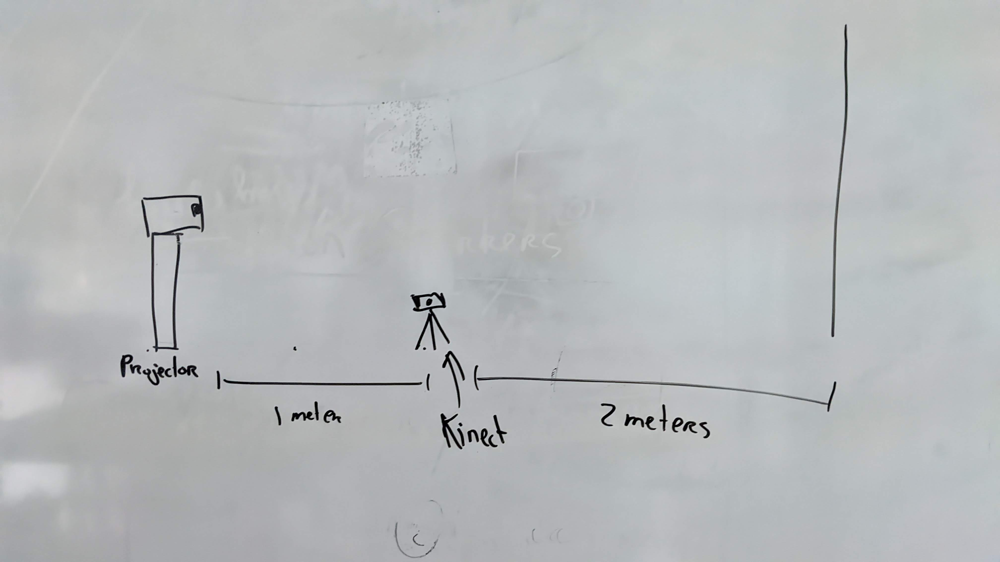
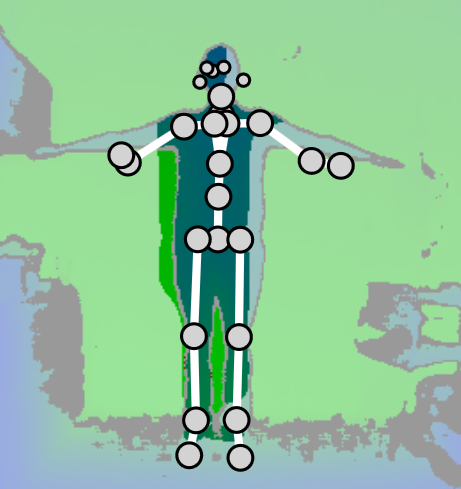

Body Projection Mapping
Interaction
Next to the interaction between the visitors there is also interaction between the preformers and festival visitors. There are many way to allow this interaction to happen. This can be distracting to some preformers, but it can also be rewarding to both parties. Think of the preformers asking the audience to sing along and then point the microphone towards them. That moment when you and your friends appear on the big screens at the festival, this can be a way to create an opportunity to allow interaction to happen between the visitors and the interaction between the visitors and preformers. This is done spontaneously and people have no idea of knowing when they would appear on those screens.What if a festival or concert allowed the audience to project their own content on a big screen by using their phone camera.
Of course, that would be a terrible idea, people will misuse this and ruin the entire festival experience. But what if you could allow the audience to project Preselectedstickers or animations on the preformers?
Implementation
Think of it as a snapchat lens but then it is projected on the preformers with a projector. This can be done with "Body Projection Mapping", this is a technique that projects animations on top of a person and the projection moves along with the person as well.How could I recreate that? In order to project on top of a person, the projector need to understand where to project. This can be done with a simple camera in combination with body detection software. Once the software understands where the person is in relation with the projection, it can neatly cut out the shape of a live preformer.
Tech Needed

First version
Processing has examples of body tracking sketches that anyone can download for free. The Kinect can easily detect people and map out a skeleton of their body. In combination with the projector, it is possible to place the projector behind the kinect and project a silhouette on top of a person?
